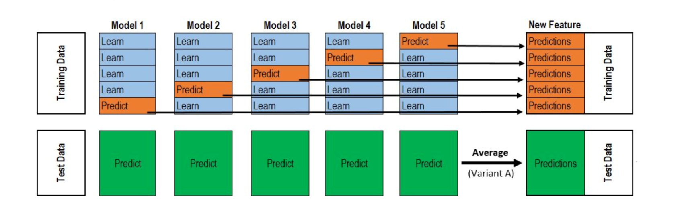

代码

衍生特征
冠军方案修正后的衍生特征是8个，分别是：
- 根据acc_x、acc_y、acc_z计算得到的acc（手机自身的瞬时加速度）
- 根据acc_xg、acc_yg、acc_zg计算得到的acc_g（手机自身结合重力的合加速度）
- 根据acc_x、acc_y、acc_z、acc_xg、acc_yg、acc_zg计算得到的g（重力加速度）
- 根据acc_x、acc_y计算得到的acc_平面（手机水平面的瞬时加速度）
- 根据acc_xg、acc_yg计算得到的acc_g平面（手机水平面的瞬时合加速度）
- 根据acc_x、acc_y、acc_z、acc_xg、acc_yg、acc_zg计算得到的手机坐标系x轴相对重力场的夹角
- 根据acc_x、acc_y、acc_z、acc_xg、acc_yg、acc_zg计算得到的手机坐标系y轴相对重力场的夹角
- 根据acc_x、acc_y、acc_z、acc_xg、acc_yg、acc_zg计算得到的手机坐标系z轴相对重力场的夹角
我的方案里只使用到了前2个衍生特征。
CNNTower
结合领域知识，对train.csv和test.csv生成额外的8个特征，共计14个特征。前8个特征为一组，后12个特征为一组，分别供给给不同的模型。这样可以使卷积核更有针对性地提取各组特征内部的潜在规律，并且往往可以使用更少的卷积核得到更好的效果。
同时
- 对train和test中采样点不足60的样本，重复拼接，直到长度超过60
- 长度大于等于60的不做处理
然后取前60的采样点通过傅里叶变换将特征变换到频域上去。
生成train和test对应的数组。
训练时，每个batch的数据
- 会有75%的概率选择使用同标签的CutMix数据增强，batch内的每个样本会被随机替换成相同标签的另一个样本，然后用原先样本的前30长度序列拼上替换样本的后30长度序列，标签不变，batch内每个样本都如此生成
- 会有25%的概率使用原始数据，不进行数据增强
场景和行为分别建模，构建CNNTower模型，使用3个损失，每个损失都会根据train.csv的标签对应一组各自类别的权重。3个损失分别以3：7：21的占比进行反向传播，epochs=1000，LR=1e-2，batch_size=512，Adam优化，损失函数使用了带0.05标签平滑的交叉熵损失，使用3折交叉验证训练模型，验证和预测时不使用数据增强。且使用了学习率衰减、提前停止、保存最优性能这几个回调函数，最后使用最优模型预测test。

值得注意的是，模型会对训练集生成一个（15000，20）（15000是样本数量，20是类别数量）的矩阵X，对测试集生成一个（16000，20）的矩阵Y。矩阵X中的K分之一（K折交叉验证）是由第K折模型对验证集预测而来的，K个验证集的预测结果堆叠，正好形成了矩阵X。同时，将K折模型中的所有模型对测试集的预测结果求平均，得到矩阵Y。矩阵X和Y会作为该模型（CNN Tower）对样本的编码，为后续的stacking作准备。下面的LSTM和LGB都是相同思路，因此不再赘述。
LSTM
结合领域知识，对train.csv和test.csv生成额外的3个特征，共计9个特征，将这9个特征分成6组，每组喂给一个LSTM模块。
将train和test结合在一起，对特征完成标准化过程。
同时
- 对train和test中采样点不足60的样本，不停地将其与自身首尾拼接，直到长度超过60
- 长度大于等于60的不做处理
然后通过傅里叶变换将特征变换到频域上去（此处没有取前60的采样点）。
生成train和test对应的数组。
构建LSTM模型，epochs=400，LR=1e-2，batch_size=256，Adam优化，损失函数使用了带0.05标签平滑的交叉熵损失，使用5折交叉验证训练模型，且使用了学习率衰减、提前停止、保存最优性能这几个回调函数，最后使用最优模型预测test。
Lightgbm
结合领域知识，对train.csv和test.csv生成额外的9个数据列（相对CNNTower新增一个采样点间隔），共计15个数据列。
然后对这15列数据，每列数据按照下面的方式生成统计特征：
- 分位数：10，20，25，30，40，60，70，75，80，90
- 偏度（数据分布偏离中心的程度）
- 峰度（数据分布顶的尖锐程度）
- # 四阶中心矩
- # 五阶中心距
- # 众数（出现次数最多的数，我感觉适用于离散值）
- 熵（描述数据的离散程度，我感觉适用于离散值）
- 数据的分布范围（最大值与最小值之差）
- 均方根rmse
- 平均绝对离差mad
- min、max、mean、sum、median、std
作者有实现特征选择功能的代码，但是最终并没有使用。作者将训练集标记为1，测试集标记为0，将（训练集，测试集）混合以后形成新的数据集供给给特征选择，此处的特征选择有2种方式：
- 使用生成的全体手工特征作为X，原先训练集/测试集的区分标记作为label构建K折交叉验证模型
- 每个特征作为X，原先训练集/测试集的区分标记作为label，对于每个特征都构建一个K折交叉验证模型，利用每个特征对应模型的AUC指标来筛选特征，过滤掉那些AUC较高的特征
之后上述特征构建LGB五折交叉验证模型来进行训练和预测。
Ensemble
作者采用Stacking策略对上述三个模型进行融合，每个模型在训练集上的预测结果为A，其shape=(15000, 20)，在测试集上的预测结果为B，其shape=(16000, 20)。
将三个模型的A和B分别以 3：3：4（LGB、LSTM、CNN）的比例融合，得到融合后的A_blending.shape=(15000, 20)，B_blending.shape=(16000, 20)。
将 A_LGB、A_LSTM、A_CNN、A_blending 和 B_LGB、B_LSTM、B_CNN、B_blending 在axis=1上拼接，得到A_final.shape=(15000, 80)，B_final.shape=(16000, 80)，外加一个序列长度的特征，最后使用LGB模型进行训练和预测。
疑惑
- 为什么lgb没有使用特征筛选？
- CNN为什么不用标准化？
- 为什么LSTM不用多任务损失和分别建模？
- 为什么LSTM没有用数据扩增？
- LSTM为什么最后用这么多Dense？
- 你们调参是一个个往上摞的么（结构/操作）？
- 有些操作降低了score，还要继续使用么？
- label smoothing确有提升么？